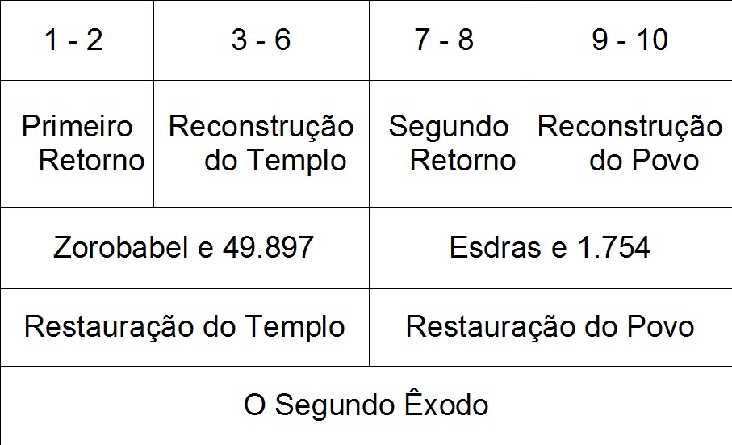
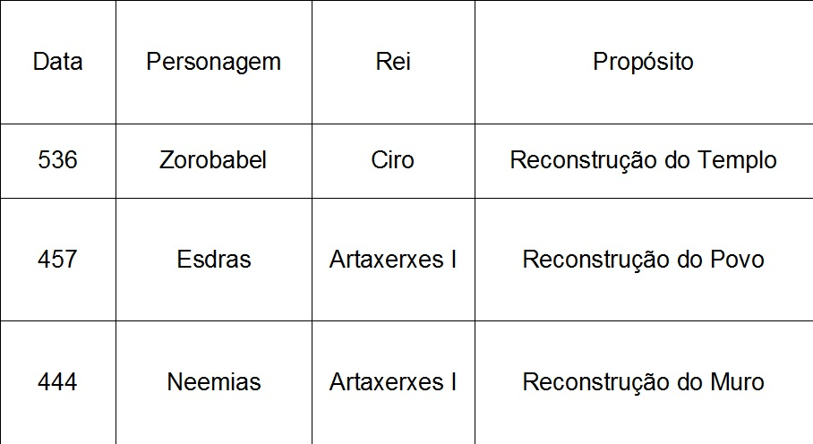
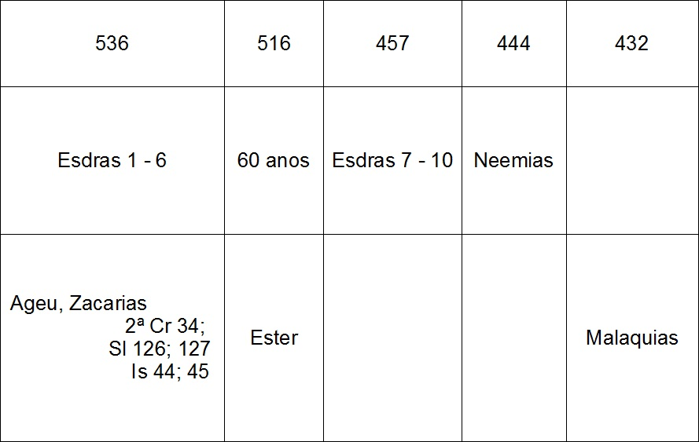
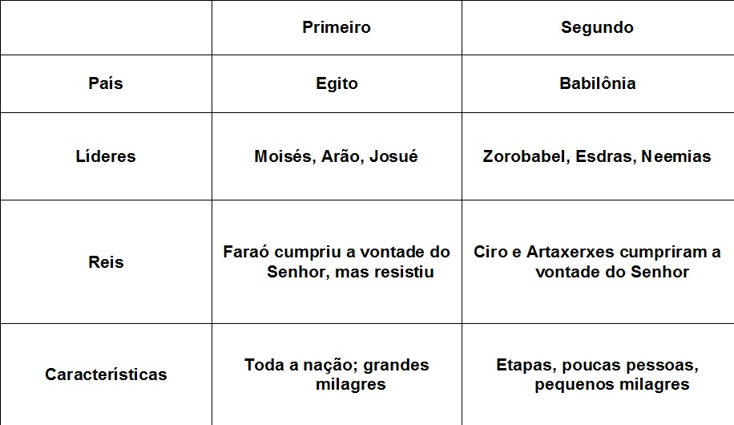
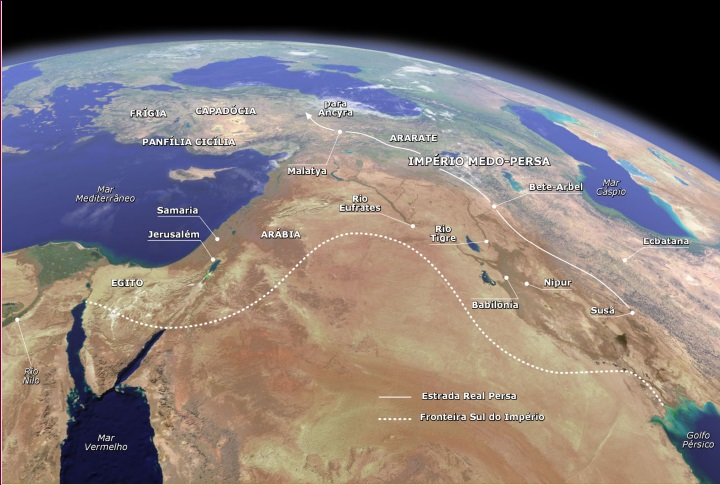

Panorama
do Antigo
Testamento
Adaptado de Edgar José Dallegrave
Livros
Históricos
Esdras
Livro de Esdras

Título:
- Esdras
Autor:
- Esdras
Data:
- 450 a.C.
Versículo Chave:
- 7:10
- Esdras
Autor:
- Esdras
Data:
- 450 a.C.
Versículo Chave:
- 7:10
Tema/Mensagem:
- A fidelidade de Deus à Aliança do povo na
terra prometida exige um reavivamento da
verdadeira religião da Aliança.
Propósito:
- O estabelecimento do povo na terra prometida
mostra a fidelidade de Deus à Aliança
Personagens Ilustres:
- Zorobabel e Esdras
Contribuição para o Cânon:
- Esdras, mais uma vez, mostra o amor de Deus
para o Seu povo
- A fidelidade de Deus à Aliança do povo na
terra prometida exige um reavivamento da
verdadeira religião da Aliança.
Propósito:
- O estabelecimento do povo na terra prometida
mostra a fidelidade de Deus à Aliança
Personagens Ilustres:
- Zorobabel e Esdras
Contribuição para o Cânon:
- Esdras, mais uma vez, mostra o amor de Deus
para o Seu povo
Fatos Interessantes:
- O decreto de Ciro, rei do império Medo-Persa, cumpriu a profecia
feita por Isaías 200 anos antes (Is 44:28; 45:1).
- Foi a política nacional da Pérsia repatriar os povos derrotados
(em contraste com os reis babilônicos e assírios)
- Observe como Deus coordenou os talentos de Esdras e Neemias
para completar a restauração de seu povo.
- Foram 3 deportações, 3 profetas (606 Daniel, 597 Ezequiel e
586 Jeremias), e foram 3 retornos, 3 grandes líderes (536
Zorobabel, 457 Esdras e 444 Neemias)
- O segundo êxodo. Não é tão impressionante porque poucas
pessoas tiveram vontade de voltar para a terra prometida.
- Zorobabel, neto do rei Jecomias, está incluído na genealogia de
Jesus
- A partir deste tempo os israelitas passarão a ser conhecidos
como judeus, porque a maior parte deles era da tribo de Judá.
- O decreto de Ciro, rei do império Medo-Persa, cumpriu a profecia
feita por Isaías 200 anos antes (Is 44:28; 45:1).
- Foi a política nacional da Pérsia repatriar os povos derrotados
(em contraste com os reis babilônicos e assírios)
- Observe como Deus coordenou os talentos de Esdras e Neemias
para completar a restauração de seu povo.
- Foram 3 deportações, 3 profetas (606 Daniel, 597 Ezequiel e
586 Jeremias), e foram 3 retornos, 3 grandes líderes (536
Zorobabel, 457 Esdras e 444 Neemias)
- O segundo êxodo. Não é tão impressionante porque poucas
pessoas tiveram vontade de voltar para a terra prometida.
- Zorobabel, neto do rei Jecomias, está incluído na genealogia de
Jesus
- A partir deste tempo os israelitas passarão a ser conhecidos
como judeus, porque a maior parte deles era da tribo de Judá.
Pontos Notáveis:
- Esdras tem papel de sacerdote, escriba, editor das escrituras
- 1350 Kms de retorno, 6 meses
- 4: 6-23 é uma carta de Artaxerxes, inserida fora da ordem
cronológica, mas dentro da ordem lógica, mostra que a
oposição durou por muito tempo.
- A obra do templo durou 20 anos. Ageu reprovou o povo e
Zacarias o encorajou a completá-la.
- O livro de Ester cabe no intervalo entre os capítulos 6 e 7.
- Esdras exercia papel de sacerdote e escriba. Pode também
ter sido editor das escrituras. Pode também ser ele o
idealizador do modelo de Sinagogas.
- Esdras tem papel de sacerdote, escriba, editor das escrituras
- 1350 Kms de retorno, 6 meses
- 4: 6-23 é uma carta de Artaxerxes, inserida fora da ordem
cronológica, mas dentro da ordem lógica, mostra que a
oposição durou por muito tempo.
- A obra do templo durou 20 anos. Ageu reprovou o povo e
Zacarias o encorajou a completá-la.
- O livro de Ester cabe no intervalo entre os capítulos 6 e 7.
- Esdras exercia papel de sacerdote e escriba. Pode também
ter sido editor das escrituras. Pode também ser ele o
idealizador do modelo de Sinagogas.

Retornos à Terra Santa
Os livros pós-exílio

O Primeiro e o
Segundo Êxodo

Aplicações:
- Deus une pessoas com dons diferentes
para se complementarem mutuamente
(não para criticar ou julgar um ao outro)
- Deus é sempre fiel à Sua aliança,
promessas ou profecias.
- Poucas pessoas querem deixar a boa
vida para fazer aquilo que Deus pede.
- Deus sempre controla os líderes
mundiais.
- Deus une pessoas com dons diferentes
para se complementarem mutuamente
(não para criticar ou julgar um ao outro)
- Deus é sempre fiel à Sua aliança,
promessas ou profecias.
- Poucas pessoas querem deixar a boa
vida para fazer aquilo que Deus pede.
- Deus sempre controla os líderes
mundiais.

